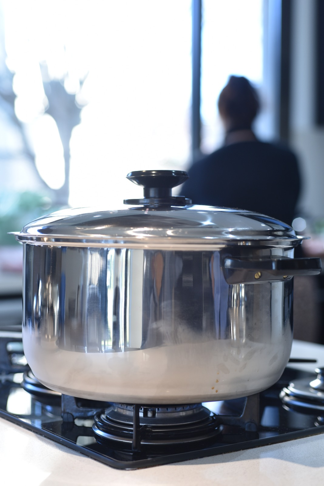
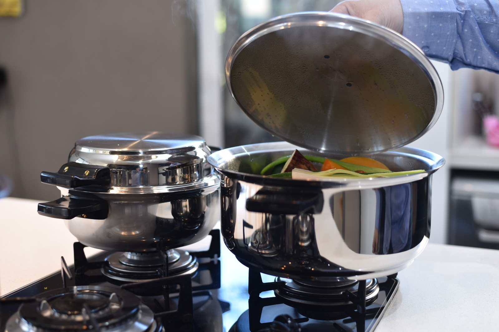

Cocinar sano no debería ser un lujo
Princessware nació de una idea simple: que cada familia pueda cocinar conservando lo mejor de los alimentos, sin tóxicos y con utensilios que duren toda la vida.

De la cocina de casa a la tuya
Empezamos buscando una batería que no dependiera de recubrimientos antiadherentes que se descascaran ni de aceites para que nada se pegue. La respuesta estaba en el acero quirúrgico 18/8: el mismo material noble que se usa en instrumental médico, llevado a la cocina. Hoy acompañamos a miles de familias que cambiaron su forma de cocinar.

Una inversión, no un gasto
Una batería barata se reemplaza cada par de años. Una Princessware se queda. Por eso cada pieza viene con garantía de por vida: queremos que la heredes, no que la tires. Cocinás mejor, gastás menos a largo plazo y cuidás el planeta de paso.
Lo que nos guía
Salud primero
Cocinar en el jugo natural de los alimentos conserva vitaminas y minerales que el exceso de agua y aceite suele arrastrar. Es comida más sabrosa y más nutritiva.
Honestidad en el producto
No prometemos magia: prometemos un material noble, bien fabricado, con respaldo real. Si algo falla por defecto de fabricación, lo resolvemos.
Cerca tuyo
Atención en español, envíos a todo el país y la posibilidad de coordinar tu compra por WhatsApp cuando lo necesites.